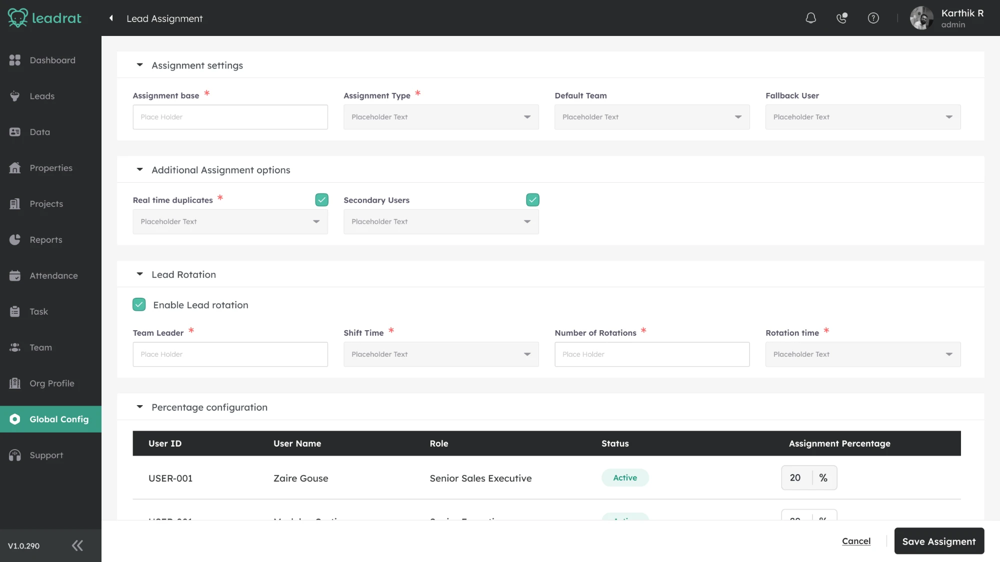
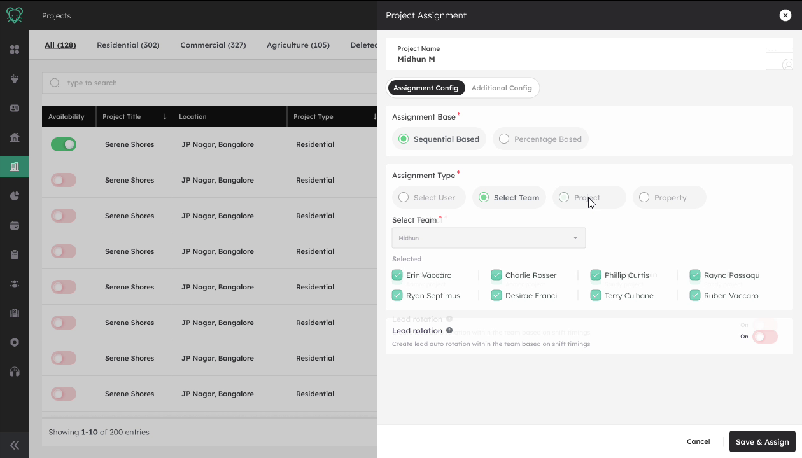
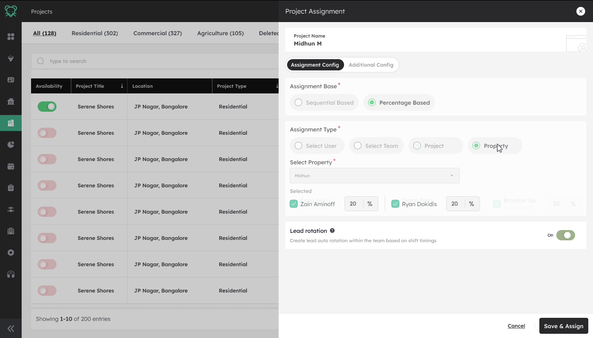
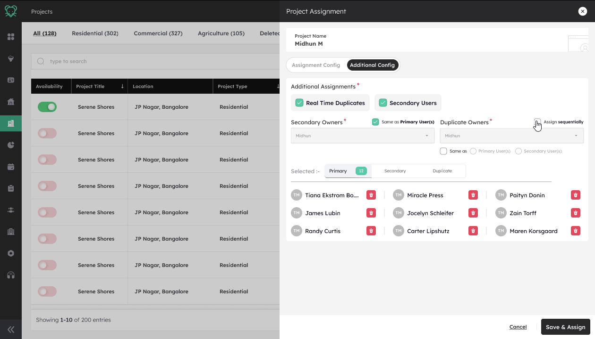

The shipped Project Assignment modal. One model, reused for users, teams, projects and properties.
Equal distribution was easy for the system, but not how teams worked
Leadrat handed out new leads in turns, one agent after another. Fair, and automatic. But a manager's team is never equal.
![Six panel black and white comic. 1, a manager sees lead deficit numbers for four teams and does not know why. 2, leads are assigned one after another, but some teams need a different split based on capacity. 3, the manager assigns by hand or juggles spreadsheet numbers, which is time consuming, error prone and has no real time view. 4, the manager imagines setting the rules and letting the system distribute leads. 5, a configuration asks one question at a time, starting with what is being assigned. 6, the rule is saved and leads are distributed automatically, for example 50, 30 and 20 percent.](assets/case-study/leadrat-comic.webp)
Automatic, but equal
Flexible, but repetitive
Controlled, but automatic
Why equal turns are not a useful split
Round robin gives both the same share because it only alternates. A manager could not say "give B more and A less".
Where the need came from
- 1Customer success brought the request.
- 2One customer was already splitting leads by hand, in percentages like 50 / 30 / 20.
- 3Three more clients asked for something similar, two in India and one in Dubai. Their requirements were not identical.
- 4The common thread: managers wanted to own the split, not just automate it.
So the question changed. How might we give managers control over lead distribution, without making them manually assign every lead?
A split is easy to say, and hard to deliver
A manager can say "Agent A gets 50 percent, B gets 30, C gets 20". The system has a harder job, because nobody knows how many leads will arrive today.
How the system keeps to the split
- 1The manager sets a target for each agent. For example 50 / 30 / 20.
- 2Every new lead goes to whoever is furthest behind their target. That gap is called the deficit.
- 3It repeats for every lead, so the split holds whether 3 leads or 300 arrive in a day.
Just giving every lead to the biggest share does not work, because the others would never get enough work.
Four people, four different problems
- The customer
- Wanted to split leads by percentage, as they already did by hand.
- The product
- Needed a model that works when future lead volume is unknown.
- Engineering
- Had to build the calculation, duplicate handling, tie breaking, conditions and toggles.
- Me
- How a manager sets all of that up without needing to understand any of it.
The PM described the backend as a long chain of conditions, yes or no checks and if else paths. I did not design that logic. I learned it with the PM and engineering, so the screen never promises something the system will not do.
Three design problems stood out
- Too many options were visible at once.
- The order of decisions was unclear.
- Assignment lived in Global Config, away from the project it was about.
I owned the experience of setting the rule
My part in the story: turning a complex assignment model into something a manager can understand.
- Understand
- Worked out what the system needed from incomplete requirements, and studied the backend logic with the PM and engineering.
- Reframe
- Challenged Global Config and moved assignment into the project and property context.
- Structure
- Replaced the everything visible screen with one decision at a time, and designed the five question sequence.
- Design
- Designed the UI for every base and type combination, including percentage allocation and the Save lock.
- Edge cases
- Low volume, concurrent edits, invalid combinations and permissions.
- Collaborate
- Worked with the PM on requirements and engineering on feasibility, supported handoff and refined the experience after launch.
What I did not own. The allocation algorithm and backend logic. Engineering built that. I designed how a manager configures it.
Assignment belongs next to the project it is about
My first direction put assignment in Global Config. It was a reasonable home for a system setting, and the wrong one for this.
- 1Open Global Config
- 2Find the assignment rules
- 3Work out which project this is for
- 4Decide how its leads are distributed
- 1Open the project or property
- 2See what is being configured
- 3Open assignment from there
- 4Decide how its leads are distributed

Why it mattered
- A manager splitting leads needs to know what they are splitting first: project name, property type, location, lead source, lead quality, budget, or who already owns the relationship.
- In Global Config the project was a step away from the decision, so the manager had to carry it in their head.
- I moved the assignment action into project and property management. None of the rules changed. The question did, from "configure assignment" to "how should leads from this project be assigned".
- The PM remembers this as one of the important changes in the project.
Instead of configuring everything, decide one thing at a time
A manager arrives with one decision to make. The first screen asked them to understand several concepts before they could finish it.
The shipped model is five questions, in order
- 1What are we assigning? A user, a team, a property or a project. This comes first because it decides who can be picked at all.
- 2How should leads be distributed? Sequential or percentage based. They are two different ideas of fairness, and the answer decides which rules matter.
- 3Who receives them? Only people the rule can actually use.
- 4How do allocation and rotation work? Percentages, rotation and any extras for those people.
- 5What happens after saving? The system distributes every new lead on its own.
Each answer narrows what the next step can offer, so invalid choices disappear before they can be made.
What I kept out of the way
- Percentage fields appear only once the strategy is percentage based.
- Duplicate owners appear only once Real Time Duplicates is switched on.
- The deficit calculation and the tie break never appear at all.
The system calculates. The manager decides
Here is where the story landed, in the order a manager moves through it. These are the real shipped screens.
Choose the base, then the type
- Sequential or percentage based comes first, because it decides which rules matter next.
- The same model applies to a person, a team, a project or a property.
- One shape instead of four, so a manager learns it once.

Define allocation, then rotation
- The manager sets what share of incoming leads each person should get.
- The system handles the deficit calculation behind the scenes.
- Lead rotation is optional, and rotates leads within a team by shift timings.

Save and assign
- Save stays disabled until a percentage split totals exactly 100.
- An invalid rule cannot reach the assignment engine.
- Real Time Duplicates adds exactly one new decision, who handles the duplicate. Not a second config screen.

Try the rule
A teaching aid on this page, not a product screen. Each lead goes to whoever is furthest behind, recalculated every time, so the split holds whether 3 leads or 300 arrive in a day.
I had to design within what the system could actually do
The system had rules about what could go with what. Engineering raised real concerns, and the screen had to follow every one.
Safeguards I designed in
- Input check. 0 to 100 only, and errors show as you type.
- Save is a lock. It stays disabled until the split totals exactly 100.
- Change isolation. A mid day edit only steers future leads.
- Low volume. The first lead of the day goes to the highest share.
What shipped, and what I learned
The assignment feature is now live and being used by 240+ users, with no support tickets or complaints reported about the assignment flow.
Shipped
- Percentage based and sequential lead distribution
- Assignment by user, team, project and property
- Rotation, duplicate handling and validation
- Used by 240+ users in the product
Learned
- The setup was easy for managers to understand and use
- Complex assignment logic does not have to mean a complex interface
- Clear rules and progressive configuration can make a technical workflow feel simple
- After launch, the experience kept working without reported assignment related issues
What I would improve next
The assignment logic was complex, and some decisions were not directly validated with users before launch. With more time, I would:
- Test the flow with more admins before and after launch
- Make the tie break logic visible when it affects an assignment
- Keep monitoring feedback as more teams use the feature
My biggest takeaway
Complex workflows can be simple when the configuration is clear.